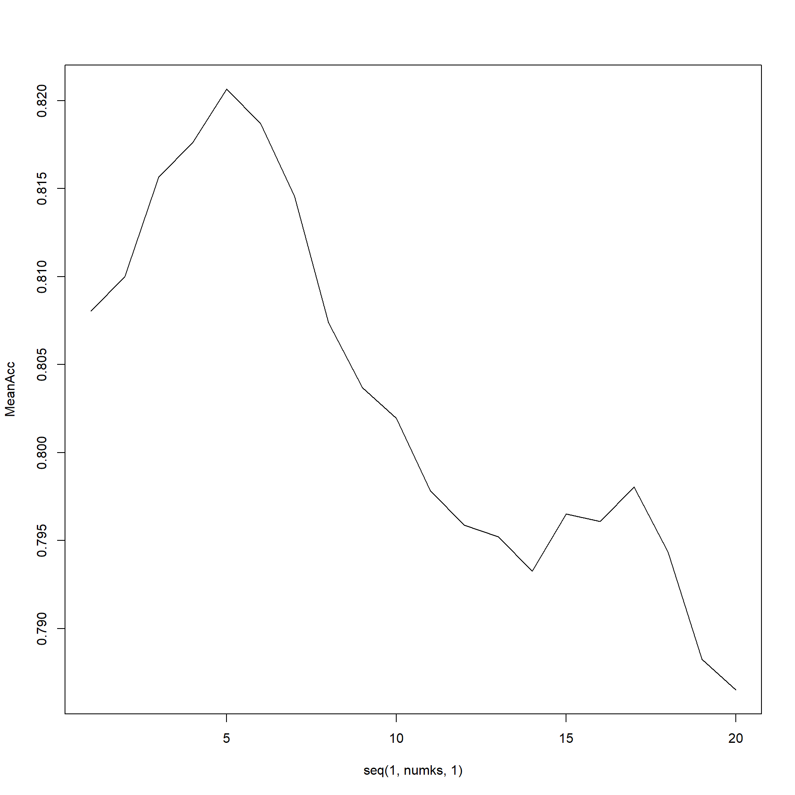

Libraries Used:
library(tidyverse)
library(ggthemes)
library(usmap)
library(caret)
library(class)Imports:
beer <- read.csv(file.choose(), header = TRUE)
brew <- read.csv(file.choose(), header = TRUE)
#Cleaning the space in state names
brew$State <- substr(brew$State, 2, nchar(brew$State))brew %>% count(State) %>%
ggplot(aes(reorder(State, -n), n)) +
geom_col(fill = "#bc9c54") +
geom_text(aes(label = n), position = position_dodge(width = 0.9), hjust = -0.25) +
coord_flip() + labs(title = "Breweries by State", y = element_blank(), x = element_blank()) +
theme(legend.position = "none", axis.text = element_text(size = 13))mapdata <- brew %>% count(State) %>% rename("state" = "State")
plot_usmap(data = mapdata, regions = "state", values = "n", labels = TRUE) +
scale_fill_continuous(low = "#213740", high = "grey", name = "Brewery Count")beerbrew <- beer %>% left_join(brew, by = c("Brewery_id"="Brew_ID"), suffix = c(".Beer", ".Brewery"))beerbrew$IBU[is.na(beerbrew$IBU)] <- mean(beerbrew$IBU, na.rm = TRUE)
beerbrew$ABV[is.na(beerbrew$ABV)] <- mean(beerbrew$ABV, na.rm = TRUE)beerbrew %>% filter(!is.na(IBU)) %>% group_by(State) %>%
summarize(median = median(IBU)) %>%
ggplot(aes(reorder(State, -median), median)) +
geom_col(fill = "#bc9c54") + coord_flip() +
labs(x = element_blank(), y = "Median IBU", title = "Median IBU By State") +
theme(legend.position = "none", axis.text = element_text(size = 13))beerbrew %>% filter(!is.na(ABV)) %>%
group_by(State) %>% summarize(median = median(ABV) * 100) %>%
ggplot(aes(reorder(State, -median), median)) +
geom_col(fill = "#213740") + coord_flip() +
labs(x = element_blank(), y = "Median ABV", title = "Median ABV By State") +
theme(axis.text = element_text(size = 13))beerbrewIBU <- beerbrew %>% arrange(-IBU)
beerbrewABV <- beerbrew %>% arrange(-ABV)
head(beerbrewIBU, 1)## Name.Beer Beer_ID ABV IBU Brewery_id
## 1 Bitter Bitch Imperial IPA 980 0.082 138 375
## Style Ounces Name.Brewery
## 1 American Double / Imperial IPA 12 Astoria Brewing Company
## City State
## 1 Astoria ORhead(beerbrewABV, 1)## Name.Beer Beer_ID
## 1 Lee Hill Series Vol. 5 - Belgian Style Quadrupel Ale 2565
## ABV IBU Brewery_id Style Ounces
## 1 0.128 42.71317 52 Quadrupel (Quad) 19.2
## Name.Brewery City State
## 1 Upslope Brewing Company Boulder CObeerbrew%>%ggplot(aes(x=ABV)) +
geom_histogram(color="#213740",fill= "#bc9c54")+
ggtitle("Distribution of ABV")+theme(legend.position = "none")## `stat_bin()` using `bins = 30`. Pick better value with
## `binwidth`.summary(beerbrew$ABV)## Min. 1st Qu. Median Mean 3rd Qu. Max.
## 0.00100 0.05000 0.05700 0.05977 0.06700 0.12800beerbrew %>% ggplot(aes(ABV, IBU, alpha = 0.5)) +
geom_point(color = "#213740") +
geom_smooth(method = lm, se = FALSE, color = "#bc9c54") +
theme(legend.position = "none")## `geom_smooth()` using formula = 'y ~ x'#filtering and categorizing as IPAs and Ales only
beerbrewAles <- beerbrew %>% filter(grepl("IPA", Style) | grepl("Ale", Style))
beerbrewAles$Style[grepl("IPA", beerbrewAles$Style)] <- "IPA"
beerbrewAles$Style[grepl("Ale", beerbrewAles$Style)] <- "Ale"
beerbrewAles$Style <- as.factor(beerbrewAles$Style)
#create train and test
index <- sample(seq(1,1534,1), 1534 * .7)
beerTrain <- beerbrewAles[index,]
beerTest <- beerbrewAles[-index,]
#classification
classification <- knn(train = beerTrain[,c("IBU", "ABV")], test = beerTest[,c("IBU", "ABV")], beerTrain$Style, prob = TRUE, k = 5)
confusionMatrix(table(classification, beerTest$Style))## Confusion Matrix and Statistics
##
##
## classification Ale IPA
## Ale 266 32
## IPA 33 130
##
## Accuracy : 0.859
## 95% CI : (0.8238, 0.8895)
## No Information Rate : 0.6486
## P-Value [Acc > NIR] : <2e-16
##
## Kappa : 0.6911
##
## Mcnemar's Test P-Value : 1
##
## Sensitivity : 0.8896
## Specificity : 0.8025
## Pos Pred Value : 0.8926
## Neg Pred Value : 0.7975
## Prevalence : 0.6486
## Detection Rate : 0.5770
## Detection Prevalence : 0.6464
## Balanced Accuracy : 0.8461
##
## 'Positive' Class : Ale
## #k optimization, k = 5
set.seed(1)
iterations = 10
numks = 20
splitPerc = .7
masterAcc = matrix(nrow = iterations, ncol = numks)
for(j in 1:iterations)
{
trainIndices = sample(1:dim(beerbrewAles)[1],round(splitPerc * dim(beerbrewAles)[1]))
train = beerbrewAles[trainIndices,]
test = beerbrewAles[-trainIndices,]
for(i in 1:numks)
{
classifications = knn(train[,c("IBU", "ABV")], test[,c("IBU", "ABV")], train$Style, prob = TRUE, k = i)
table(classifications,test$Style)
CM = confusionMatrix(table(classifications,test$Style))
masterAcc[j,i] = CM$overall[1]
}
}
MeanAcc = colMeans(masterAcc)
plot(seq(1,numks,1),MeanAcc, type = "l")
which.max(MeanAcc)## [1] 5max(MeanAcc)## [1] 0.8206522#Top 5 styles
style_counts <- data.frame(table(beerbrew$Style))
head(style_counts %>% arrange(-Freq),5)## Var1 Freq
## 1 American IPA 424
## 2 American Pale Ale (APA) 245
## 3 American Amber / Red Ale 133
## 4 American Blonde Ale 108
## 5 American Double / Imperial IPA 105#Top styles in each state
beerbrew %>%
filter(Style == "American IPA" | Style == "American Pale Ale (APA)" | Style == "American Amber / Red Ale" | Style == "American Blonde Ale" | Style == "American Double / Imperial IPA") %>%
count(State, Style) %>%
arrange(-n, State) %>%
group_by(State) %>%
top_n(1,n) %>%
ggplot(aes(reorder(State, -n), n, fill = Style)) +
geom_col() +
xlab("State")+
ylab("Count") +
scale_fill_brewer(palette = "Paired") +
coord_flip()+
theme(legend.position = "bottom")